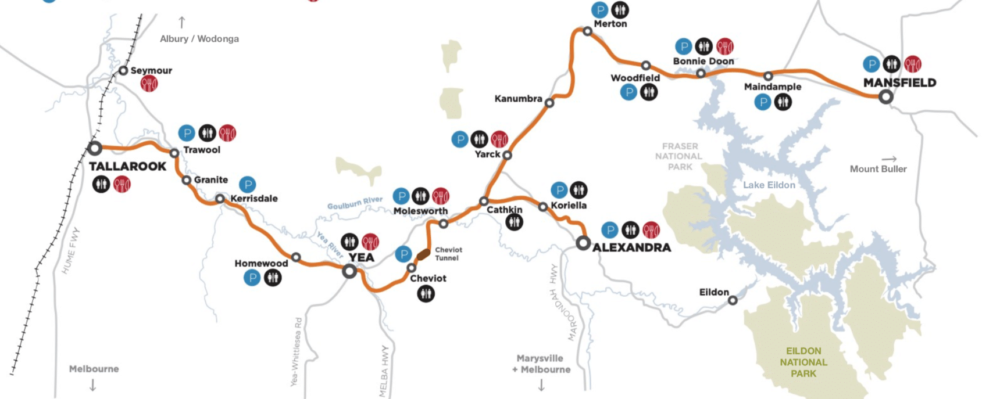

The Journey Begins: A Ride to Heal and Rediscover
Cycling has always been a passion, but last year, I needed more than just another ride. Having just completed my graduate certificate in data science, I was at a crossroads. Transitioning out of nursing, after the emotional toll of working through the trauma of COVID, left me feeling lost. I could no longer continue in a career I had once loved. At one of my lowest points, I turned to nature as a way to reconnect and rediscover joy. That’s when I decided to push myself with my longest ride yet—over 240 km across four days on the Great Victorian Rail Trail.
The ride wasn’t just about the physical challenge; it was a journey to heal and find peace. Each section of the trail presented its own beauty and obstacles, giving me moments to reflect, recharge, and test my limits. Every kilometre was a step toward rediscovering my passion and finding new strength.
The Journey: Day-By-Day

Day 1: Tallarook to Molesworth - 55km
The Excitement of Beginnings
The adventure began in Tallarook, a quaint town known for its rich history and scenic landscapes. The first leg of the journey led through the picturesque Trawool Valley, where the terrain was relatively flat, making for a smooth start. As I pedaled along, stunning views of rolling hills and the meandering Goulburn River accompanied me.
A highlight of the day was passing through the historic Cheviot Tunnel, Victoria's longest rail trail tunnel. Eventually, I arrived in the quiet town of Molesworth. Nothing was open, and not a soul was in sight. Thankfully, the accommodation had left out a few slices of bread and Vegemite—just enough to keep me going after a long day on the bike.

Day 2: Molesworth to Mansfield - 66km
Long Climbs and Rewarding Views
Day two took me from Molesworth to Mansfield, covering about 66 kilometres. The terrain became more demanding with gentle climbs, but the stunning scenery made up for the effort. The landscape transitioned from lush farmland to more rugged terrain, offering views of distant mountain ranges.
Art installations dotted the trail, celebrating the region’s culture and history, and the trail crossed several small streams, allowing for refreshing breaks. After surviving a stretch that was home to a particularly aggressive magpie, I finally reached Mansfield. Though sore and exhausted, a shower, massage, and hearty pub meal rejuvenated me, leaving me ready for the next leg of the journey.
Day 3: Mansfield to Yea - 83km
The Toughest Day: Pushing Through and Finding Strength
Day three stretched 83 kilometers from Mansfield back to Yea, the most challenging day so far. The trail offered spectacular views of valleys and mountains, but the effort required for the climbs tested my endurance. A long, exhilarating downhill section gave me a much-needed break and a sense of reward for all the effort.
The day wasn’t without its surprises. I encountered a farmer who had blocked the trail to Alexandra, forcing me to retrace my steps. With dusk approaching, I had to divert directly to Yea, adding more kilometres to an already lengthy ride. The detour was tough, but the feeling of accomplishment when I rolled into Yea that night made it all worth it.

Day 4: Yea to Tallarook - 39km
Reflecting on the Final Stretch
The last leg of my journey, 39 kilometers from Yea back to Tallarook, felt both familiar and reflective. As I retraced my path, I took in the familiar sights with a sense of accomplishment. The route was mostly flat, with a few gentle gradients to keep me on my toes, but the knowledge that I was nearing the end gave me extra energy.
Along the way, I made sure to revisit some favorite spots—scenic overlooks and quiet rest stops that had been highlights on the first day. Each stop felt like a chance to savor the experience before it ended. By the time I rolled into Tallarook, there was a deep sense of satisfaction. Completing the loop, back where it all began, felt like the perfect conclusion to an unforgettable journey.
Highlight Moments
Why the Great Victorian Rail Trail?
The GVRT is more than just a long ride—it’s a journey through some of Victoria's most beautiful landscapes, enriched with art and culture. This trail became my perfect escape and the start of my path to rediscovering joy after the challenges of recent years.

Ready to Ride
As I packed my bike, excitement buzzed in the air. Water, layers of clothing, snacks, tools, and a first-aid kit all had to be carefully placed in my bags. There would be long stretches with no access to supplies, so preparation was key. With my gear loaded and balanced, I was ready for whatever the trail had in store.
Trail Art
The GVRT isn’t just a cyclist’s dream—it’s also a creative experience. Over two dozen art installations are scattered along the 134-km stretch, blending the landscape with Indigenous culture and history. Each piece of art along the trail deepened my appreciation for the land and its stories.

Wildlife Encounters
Australia’s wildlife made sure my journey was never dull. From kangaroos hopping through the bush to a particularly aggressive magpie, nature kept me on my toes. The most memorable moment came when an echidna saved me from riding straight into a large snake basking on the trail. It was nature at its wildest!
Riding Again: A Birthday Celebration with Friends
After conquering the GVRT solo, I’ve decided to ride it again for my birthday next year—this time with friends. We’ll cycle the trail at a more relaxed pace, starting with 40 km from Tallarook to Yea on the first day.
On Day 2, we’ll ride 60.5 km to Bonnie Doon and stay in a cozy cottage overlooking the lake—perfect for unwinding. Day 3 brings us to Mansfield for a birthday celebration with a massage and a meal at the pub, followed by a scenic 44 km round trip back to Bonnie Doon.
We’ll then ride back to Yea on Day 4, and complete the journey on Day 5, cycling 39 km to Tallarook before catching the train back home. It’s shaping up to be the perfect way to celebrate—surrounded by good friends, great scenery, and lasting memories.